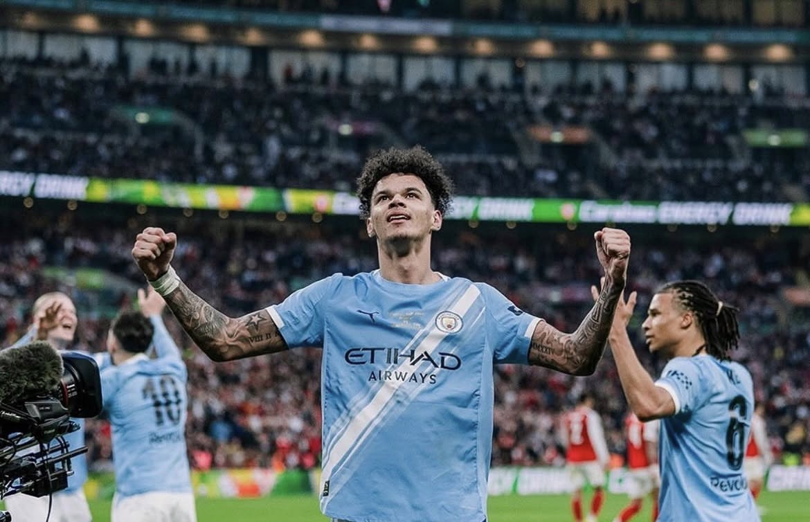
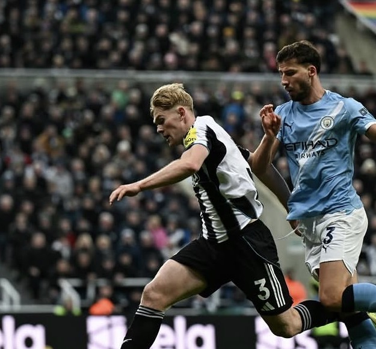
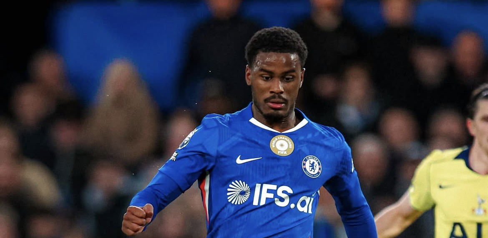
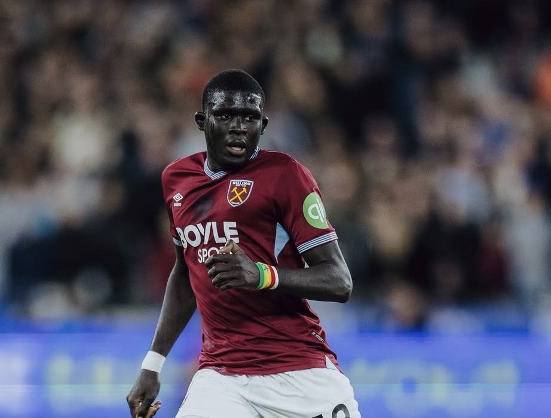
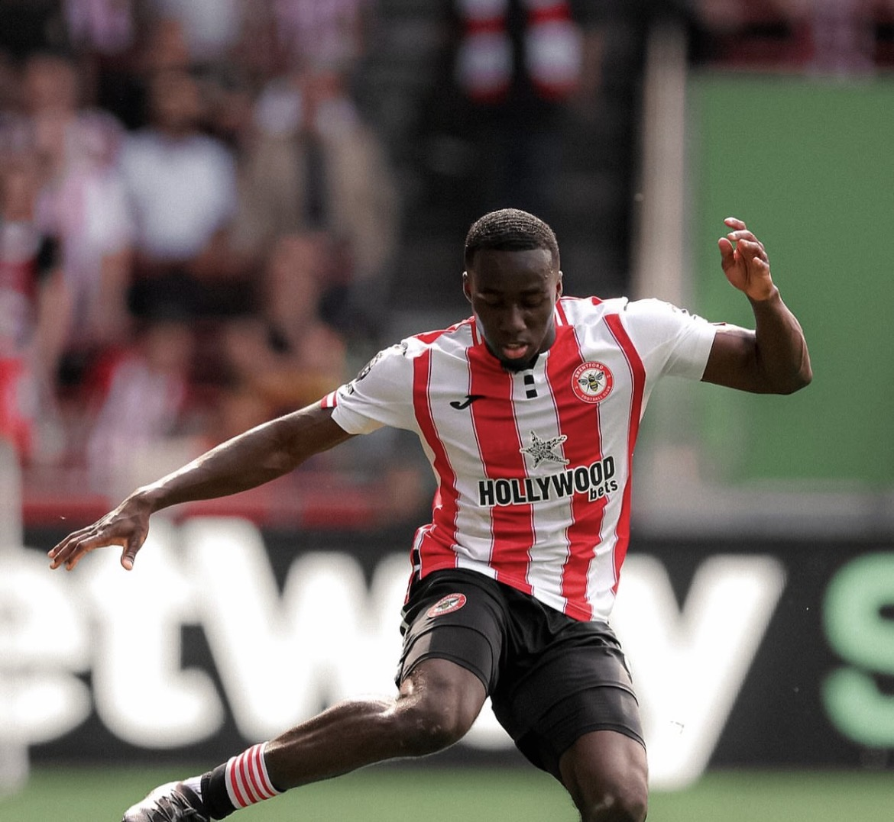

SBNico O'Reilly
所属: Manchester City / 身長: 193cm
マンチェスター・シティ所属のイングランド代表MF。193cmの体格を活かした力強さと、抜群のテクニックを併せ持つ万能型。複数ポジションを高水準でこなし、名門の未来を担う大器として大きな期待を集めている。
次世代を担うPLの至宝たち
圧倒的なフィジカルによる対人守備だけでなく、攻撃の起点となる高精度な展開力を備えた次世代のディフェンスリーダー

SB所属: Manchester City / 身長: 193cm
マンチェスター・シティ所属のイングランド代表MF。193cmの体格を活かした力強さと、抜群のテクニックを併せ持つ万能型。複数ポジションを高水準でこなし、名門の未来を担う大器として大きな期待を集めている。
所属: Arsenal/ 身長: 178cm
アーセナルの下部組織出身で、イングランド世代別代表の俊才。驚異的なボールキープ力と推進力が武器で、元々CMだったがチームのSB不足でSBにコンバート。名門の未来を担う、戦術眼に優れた万能型SB。

SB所属: Newcastle United/ 身長: 179cm
ニューカッスル所属のイングランド代表DF。MF出身ならではの高い技術と攻撃センスを誇る左サイドバックです。複数ポジションをこなす汎用性と高精度なキックを武器に、イングランドの未来を担う左サイドの職人。

SB所属: Chelsea/ 身長: 182cm
チェルシー所属のオランダ代表DF。CBと左SBを高水準でこなす万能型で、高精度な左足のパスと卓越した守備センスが武器。

SB所属: West Ham United/ 身長: 183cm
ハマーズ所属するセネガル代表DF。爆発的なスピードを活かした左サイドからの突破力と攻撃センスが武器。驚異的な運動量で攻守に輝きを放ち、欧州のメガクラブからも熱い視線が注がれる新星。
所属: Newcastle United/ 身長: 182cm
ニューカッスル所属のイングランド代表DF。爆発的なスピードを活かした一対一の堅実な守備と、鋭い攻撃参加が武器の現代型サイドバックです。左右どちらのサイドも高水準でこなし、今後の代表や欧州を担う気鋭の新星。

SB所属: Brentford/ 身長: 182cm
ブレントフォード所属のイタリア世代別代表DF。爆発的なスピードと対人の強さを誇る気鋭の右サイドバック。高い守備力と攻撃の推進力を武器に大ブレイクを果たし、プレミアリーグの最優秀若手賞にもノミネートされるなど世界が注目する至宝。
所属: Chelsea/ 身長: 179cm
チェルシーに所属するフランス代表DF。爆発的なスピードを活かしたサイドの突破力と、一対一の堅実な守備を兼ね備えた現代型右サイドバック。高いクロス精度も武器に、名門の右サイドに君臨する不動の若き実力者。